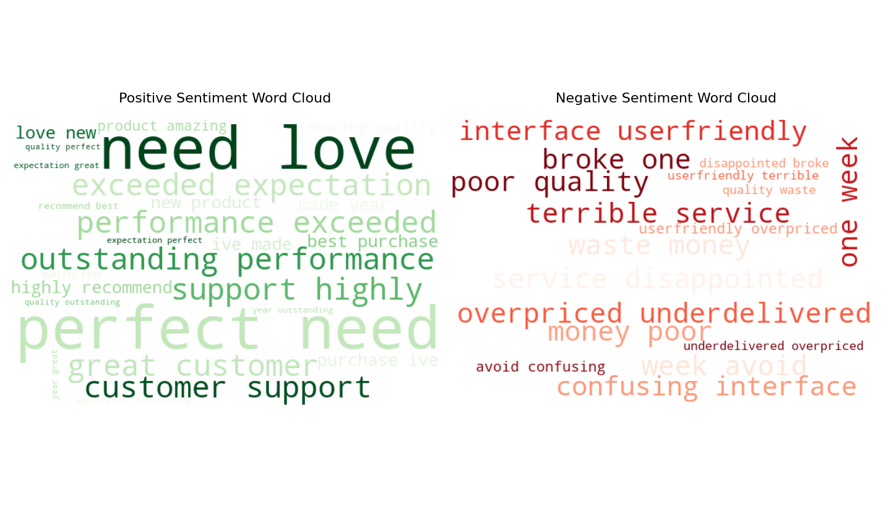
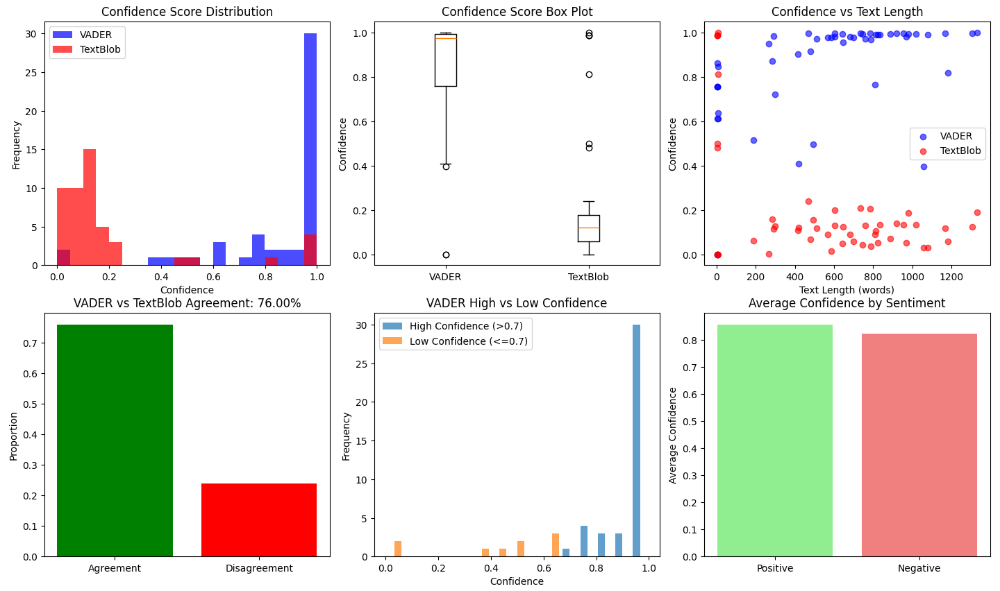

Sample Visualizations



NLP & Machine Learning
Real-time brand perception monitoring at scale
A real-time analysis pipeline processing 50k+ daily social mentions. Built to detect PR crises instantly using transformer-based sentiment classification.
Marketing teams were reacting to PR crises hours too late due to slow batch reporting. They needed immediate visibility into brand sentiment trends.
Built a flexible architecture to ingest social data. Fine-tuned a BERT transformer model for specific domain sentiment analysis. Visualised live trends in a Streamlit dashboard for immediate insight.
Reduced crisis response time from 4 hours to <10 minutes. Processing 50k+ tweets/day with sub-second latency.
# Example: Quick Sentiment Analysis
from src.sentiment_analyzer import SentimentAnalyzer
analyzer = SentimentAnalyzer()
result = analyzer.get_ensemble_prediction(
"This product exceeded my expectations!"
)
print(f"Sentiment: {result['sentiment']}")
print(f"Confidence: {result['confidence']:.2f}")
# Output: Sentiment: positive, Confidence: 0.89The app may take a few seconds to load. Click below to wake it up or open in a new tab.
Wake Up / Open Full Demo
Complete source code, documentation, and example notebooks available on GitHub